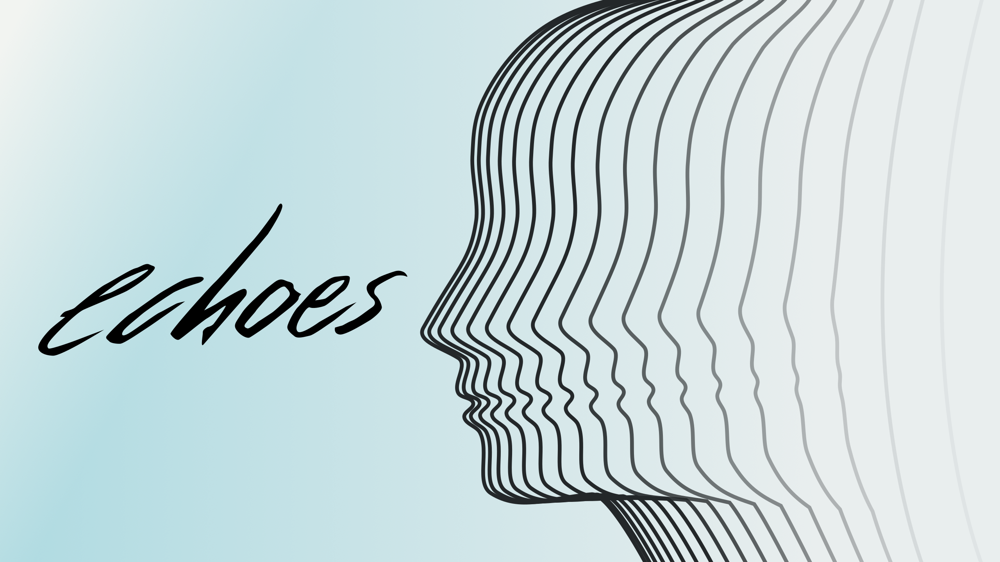
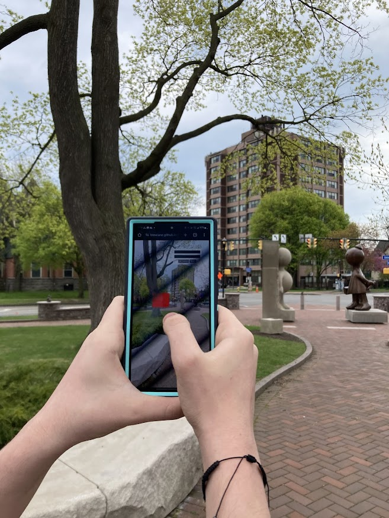
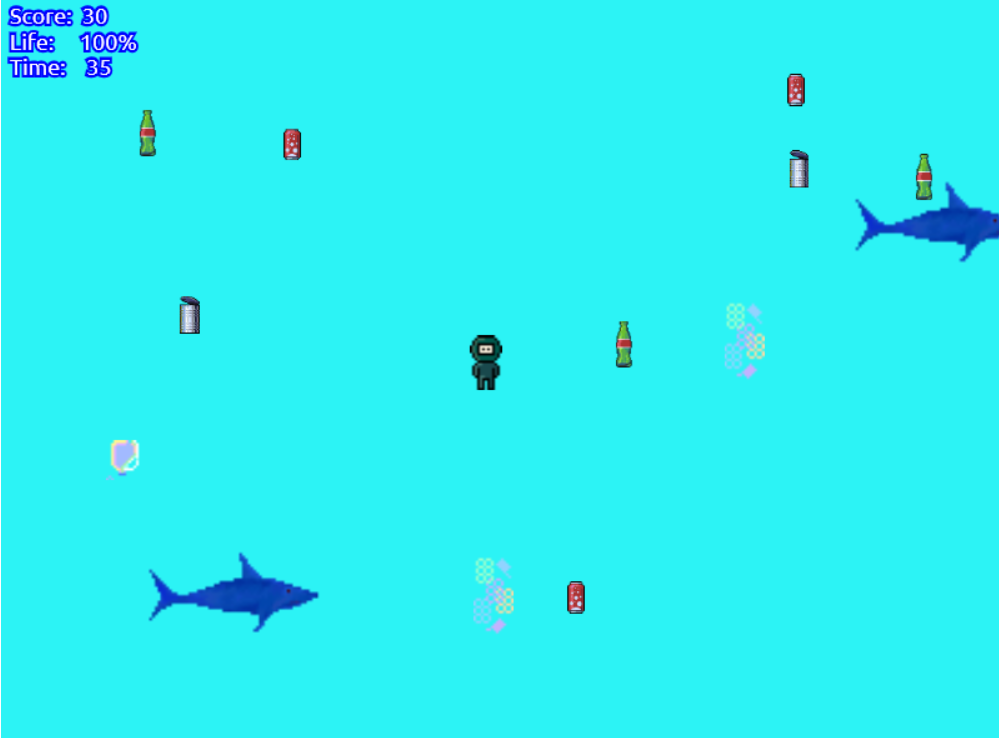

About Me
Hello! I am majoring in New Media Development at RIT. I am hoping to get a job in interactive media, particularly games or VR. I believe that educational interactive media has the potential for creating positive change— building empathy through immersive experiences. I really enjoy narrative-focused RPGs, especially games focused on portraying underrepresented communities or based on historical events.
Skills
Create structured web pages using modern semantic HTML.
Design visually appealing sites and interactions using CSS and CSS frameworks including Bootstrap, Bulma, and Tailwind.
Code interactive websites, games, and apps using Javascript.
Develop apps and games using C# and the Unity Game Engine.
Design logos and assets using Adobe Illustrator and Photoshop; write scripts with Javascript and NodeJS to automate tasks.
Create and edit professional videos using Adobe Premiere Pro and similar software.
Develop apps using Flutter and Dart.

Organize and edit photographs using Adobe Lightroom.
Projects
QUEER: IT'S NOT A BAD WORD
Nonfiction visual novel about the Queer community: 2021-present
Queer: It's Not A Bad Word is a game about queer identity, queer history, and queer community. The game is an educational text-based RPG based on interviews with real people. In the game, you can explore New York City, Rochester, and Washington, D.C. and talk to people you encounter along the way. In your travels you will hear the stories of eight different people of different ages, identities, and backgrounds. This project aims to increase awareness of the queer community-- our culture, our experiences, and our many varied members-- for those in the community and for our allies. Representation is important and what is better representation than the stories of real people? I began working on this project in my freshman year at RIT. It was not created for a class assignment, it is purely a passion project. I have done all of the interviewing, writing, and coding work myself, and I have gotten help from friends and classmates to create the art. The game is a work in progress and was originally developed using Twine and ink, text-based game engines for branching narratives. I have begun porting the game into Unity using a plugin library that supports integration with ink. I plan to eventually release the game on itch.io.

echoes WEB DEVELOPMENT TEAM
Updated and maintained site using HTML, Tailwind CSS, and Svelte: 2025
The VIP Program engages both undergraduate and graduate students in faculty-led multidisciplinary project teams. echoes is a credit-bearing student-led, student-run project at Rochester Institute of Technology exploring how developing and playing games can cultivate shared understanding and foster meaningful connections. As part of the web development team, I collaborated with other students using agile production methods to develop and maintain the echoes website, which promotes and hosts student-created games. I completed tasks which were organized and assigned via GitHub Taskboard. I contributed code to the site's pages using Svelte, Tailwind, and NodeJS.
CENTENNIAL SCULPTURE PARK WALK
Augmented Reality experience made with AR.js and Locar.js: 2025
The goal of this project was to create an interactive and informative experience at the Rochester Memorial Art Gallery's Centennial Sculpture Park. The Scultpure Park is a free to access public space where just about anyone can come to see fine art. I worked as part of a team with 3 other students to develop the project. After looking into the park more and visiting it for ourselves, we found that most of the information about the park's sculptures was hidden away on the MAG's website, and unlikely to be found by anyone walking around the park. So, we decided to make that information quickly and easily accessible via AR objects that when clicked or tapped open up a UI that shows information about the sculptures that can typically only be found on the website. The project's code uses location tracking to give users information about nearby sculptures, which can be accessed via red boxes that appear next to the appropriate sculpture. By doing this, we hoped to make the park more interactive and engaging by providing a unique way to learn more about these sculptures.
OCEAN CLEAN UP
Arcade-style game made with JavaScript and PIXI.js: 2023
I made this game for RIT's Interactive Design and Problem Solving course. I built off of a game project I had developed in an earlier course, with more robust graphics and code functionality this time. I was able to implement more features that I had wanted to include originally but due to time constraints and my coding knowledge were outside the scope of the project. The game was made using Javascript and HTML as well as a JS library called PIXI.js which supports browser game development. In the game, the player controls a diver collecting plastic in the ocean. The objective is to collect as much plastic as you can within a minute. You can move the divers with your mouse. Moving the diver over a piece of trash automatically collects the trash and adds to your score based on the type of trash. You get more points for collecting plastic trash.
Photography

Click here to view my photography portfolio.